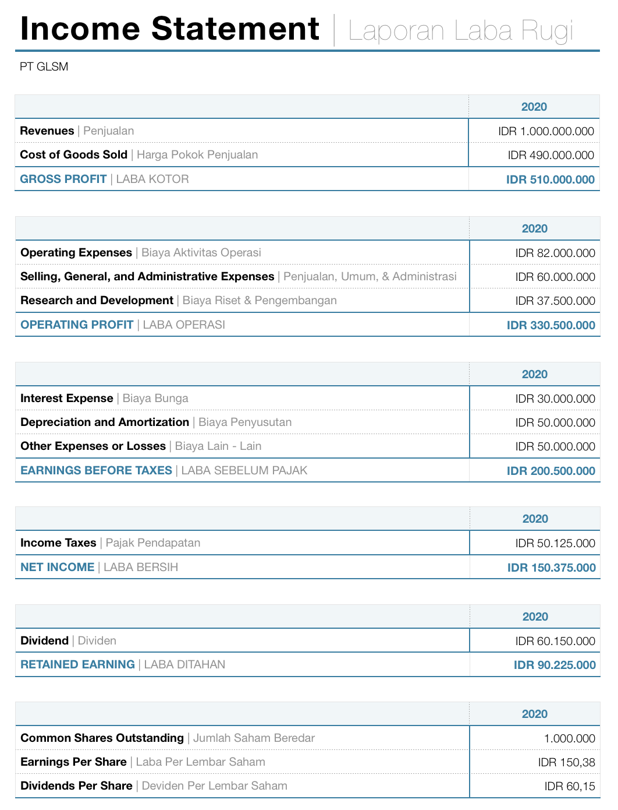
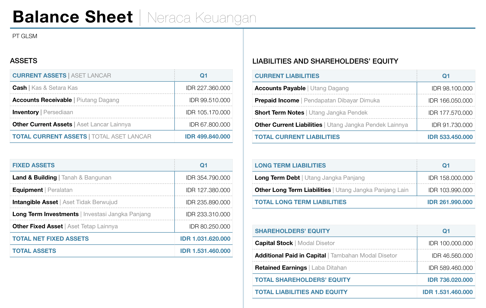

Analisa fundamental merupakan salah satu dari dua metode bagi investor untuk menilai sebuah perusahaan layak di beli atau tidak. Pembelian saham perusahaan menggunakan analisa fundamental memiliki tujuan untuk investasi jangka panjang dengan durasi investasi minimal di atas 3 tahun.
Sangat keliru jika analisa fundamental dipakai untuk membeli saham yang diharapkan bulan depan bisa naik, semester besok bisa naik, bahkan tahun depan akan tumbuh. Jika ingin mencari saham demikian, maka lebih tepat menggunakan Analisa Teknikal daripada Analisa Fundamental.
Analisa fundamental adalah analisa mendalam sebuah perusahaan, dan kita perlu ingat bahwa penjualan & laba bersih perusahaan tidak bergerak naik turun tajam seperti harga saham. Jadi, efek dari Analisa Fundamental akan terpengaruh oleh kinerja perusahaan dan sifatnya adalah jangka panjang.
Analisa fundamental yang digunakan untuk membeli saham sebuah perusahaan sama persis seperti melakukan proyeksi bisnis ketika kamu akan membuka bisnis baru dari NOL. Berapa penjualannya? Berapa marginnya? Berapa estimasi profitnya? Namun bedanya adalah, ketika buka bisnis dari NOL, kamu tidak ada data historis. Hanya kata si A, kata si B, serta feeling. Ketika beli saham di bursa efek, ada data masa lalu yang bisa dipelajari dan dianalisa. Jadi, dengan investasi fundamental saham, kamu SELANGKAH DI DEPAN daripada buka bisnis dari NOL.
Pahami dulu, baru kamu akan lebih siap dan percaya diri dalam melakukan investasi jangka panjang di pasar saham. Jangan hanya modal percaya diri saja tapi tanpa belajar, karena itu akan membawa kamu ke petaka investasi.
Banyak sekali yang meraih sukses di pasar modal Indonesia sebagai INVESTOR. Mereka adalah orang yang mengerti bisnis perusahaan yang mereka beli sahamnya dan punya komitmen jangka panjang di dalam perusahaan tersebut. Mereka pun menggunakan produk perusahaan tersebut, bahkan membantu mengembangkan bisnis perusahaan yang sahamnya mereka miliki.
Investasi saham sangat amat menjanjikan selama perusahaan yang di beli terus tumbuh dan berkembang dan kamu terus menyimpannya. Yuk kita simak contoh potensi keuntungan dari investasi saham di bawah ini.
Menarik bukan potensi yang bisa kamu dapatkan jika berinvestasi jangka panjang di perusahaan yang bagus? Kamu akan dapat kenaikan aset dan passive income sekaligus dan ini berlangsung selamanya, selama perusahaan yang kamu miliki sahamnya itu terus tumbuh dan berkembang.
Disinilah pentingnya kita memiliki horizon jangka panjang dalam melakukan investasi. Jika kamu hanya ingin membeli saham yang bulan depan naik, lupakan analisa fundamental.
Yuk kenali beberapa istilah penting yang perlu kamu tahu seputar analisa fundamental saham.
Banyak sekali yang salah / keliru dalam memahami dan menjalankan analisa fundamental.
Analisa fundamental itu bagaikan studi kelayakan bisnis yang dilakukan oleh perusahaan yang ingin membuat ‘business unit’ baru, perusahaan yang akan meluncurkan produk baru, atau KAMU yang akan memulai sebuah bisnis dengan modal tertentu.
Nah, simak penjelasannya disini ya mengenai analisa fundamental dengan senetral – netralnya.
Analisa fundamental adalah analisa untuk menghitung nilai intrinsik sebuah perusahaan. Bahkan tidak melulu menghitung nilai intrinsik, namun menghitung aliran kas (cashflow) perusahaan untuk kelayakan pinjaman kredit pun merupakan bagian dari analisa fundamental. Untuk melakukan hal ini, kita harus mengerti business model perusahaan tersebut dan bagaimana proyeksinya di masa mendatang.
Tidak ada gunanya melakukan analisa fundamental berdasarkan data historis yang bagus namun di masa mendatang ternyata tidak sebaik masa lalu.
Objek penting dalam analisa fundamental terbagi menjadi 2 golongan. Data masa lalu dan proyeksi masa depan.
Data masa lalu meliputi: Laporan laba rugi, neraca keuangan, laporan arus kas, track record bisnis perusahaan, dan track record management.
Proyeksi masa depan meliputi: Estimasi penjualan dan laba bersih, market share produk, ekspansi eksternal dan internal, dan sebagainya.
Tujuan utama analisa fundamental adalah BUKAN untuk mencari untung instan. Esensi dari analisa fundamental adalah untuk memiliki bisnis yang baik dan dapat dibeli di harga yang baik pula. Karena dalam proyeksi bisnis selalu ada namanya cost of fund, maka tujuan utama analisa bisnis adalah memiliki bisnis maupun perusahaan yang bisa memberikan return di atas cost of fund.
Ibarat membuat bisnis baru dari NOL, dengan mencairkan deposito, berapa besar return dari bisnis baru tersebut? Dan apakah net return-nya di atas (jauh di atas) deposito, atau malah mengalami kebangkrutan. Hati – hati, hitungan proyeksi bisnis itu subjektif dan bisa berlebihan.
Jadi cost of fund itu penting. Jangan sampai mencairkan obligasi dengan yield 8% membangun sebuah bisnis yang hanya memberikan return on investment sebesar Deposito 4% atau malah bangkrut.
Analisa fundamental dipakai oleh beberapa pihak berbeda, seperti Investor yang ingin membeli bisnis, analis yang memberikan rekomendasi, atau analis kredit bank sebelum memberikan pinjaman kepada perusahaan.
Jadi bisa dilihat disini, setiap pihak ada perbedaan tujuan dalam melakukan analisa fundamental. Setiap pihak tersebut pun akan punya cost of fund yang berbeda dan durasi yang berbeda pula dalam melakukan analisa.
Analisa fundamental akan memiliki result dan action plan berbeda. Tidak bisa disamaratakan, dan keberagamannya sangat tinggi.
Dipakai untuk berapa lama ini tergantung dari ‘user’. Siapa ‘end user’ dari analisa fundamental ini? Kembali ke bagian atas, pemakai analisa fundamental, maka durasi akan variatif:
Calon Pembeli Bisnis: Durasi analisa fundamental adalah selama – lamanya. Namun bisa jadi jangka pendek jika si pembeli bisnis ini adalah private equity yang tujuannya memang memperbaiki perusahaan untuk nanti dijual lagi.
Analis Fundamental: Analis akan melakukan proyeksi sesuai kebutuhan client-nya. Setiap client akan punya tujuan berbeda. Namun durasi yang digunakan oleh analis biasanya tidak sepanjang calon pembeli bisnis di atas.
Analis kredit Bank: Mereka akan melakukan analisa sesuai durasi pinjaman kredit, mulai dari 1 tahun hingga 10 tahunan. Dan ingat, objek analisanya cenderung lebih sempit daripada analisa investor yang akan membeli bisnis (keseluruhan perusahaan).
Exit strategy dari investor yang menggunakan analisa fundamental adalah kembali ke bisnis perusahaannya. Apakah produknya sudah tidak ada masa depan? Apakah produknya sudah ketinggalan zaman dan terlanjur terdisrupsi dengan teknologi baru? Apakah managementnya sudah tidak kompeten dan mustahil untuk diganti? Apakah lebih baik bangkrut daripada melanjutkan usaha?
Catatan: Tidak seperti trader saham yang melakukan cutloss ketika harga turun di level tertentu, secara fundamental jika harga turun namun bisnis perusahaan sangat amat stabil dan tumbuh, maka ini kesempatan menambah porsi kepemilikan lebih banyak lagi di harga diskon.
Jadi kamu udah semakin mengerti kan apa itu analisa fundamental?
Kalau kamu mau pahami berbagai istilah persahaman, kamu bisa akses KAMUS SAHAM.
Untuk berinvestasi saham, tentu kita harus memilih perusahaan yang masa depannya cerah, manajemen dan seluruh orang di dalam perusahaan tersebut bekerja dengan sepenuh hati dan tentunya harus profit dong usahanya?
Nah ini 3 point penting di bawah ini perlu kita pertimbangkan ketika melihat sebuah perusahaan, apakah kita akan berinvestasi atau tidak. Hal ini menjadi komponen terpenting & vital dalam analisa fundamental perusahaan.
Ini sangat penting dan nomor satu. Kamu mau investasi di perusahaan yang produknya terus dibeli orang atau yang produknya sekarang saja sudah mulai kehilangan peminat. Jadi, sebelum melakukan analisa apapun, tanyakan 1 pertanyaan ini: Apakah 5 – 10 tahun orang (dan semakin banyak orang) masih akan membeli dan menggunakan produk ini? Kalau jawabannya ragu, lupakan.
Ini nomor dua, kalau produknya disukai orang, apakah perusahaan dijalankan dengan baik? Tidak ada gunanya produknya laku tapi karena management yang tidak baik malahan perusahaannya merugi. Daripada beli sahamnya, mending beli produknya saja kita bisa pakai. Kalau beli sahamnya ternyata perusahaannya jelek, menghabiskan waktu kita saja.
Ini yang terakhir, tapi selalu jadi yang paling diutamakan. Kalau business modelnya akan memburuk, laporan keuangan saat ini bisa aja sangat bagus. Ketika ada investor yang melihat masa depan tidak begitu baik dan menjual perlahan menjadikan harga turun, bisa jadi kamu temukan saham semacam ini PER dan PBV-nya sangat rendah. Hati – hati dengan PER-PBV-Trap. Perusahaan yang bagus akan memiliki EPS yang terus naik, dan selalu bagi dividen rutin.
Jangan membeli bisnis sebuah perusahaan hanya karena produknya dimana – mana, pemiliknya orang terkenal, atau lagi nge-tren. Pada akhirnya: ini perusahaan untung ga? Banyak lho usaha yang ramai namun akhirnya tutup, karena ga untung, walau terlihat ramai.
Investor (pemilik bisnis) sejati akan fokus pada 2 komponen return dari saham, bukan hanya salah satu saja!
Laporan keuangan merupakan hasil kerja direksi, manager, hingga staff dalam sebuah perusahaan. Kinerja mereka tidak diukur secara kualitatif saja namun secara kuantitatif. Seperti laba per tahun, tingkat produktivitas per karyawan, dan sebagainya. Semuanya dirangkum dalam laporan keuangan. Tanpa hal ini, semua orang tidak bisa mencari, menganalisa, dan memiliki saham perusahaan hebat. Silahkan disimak ya.
Laporan laba rugi adalah laporan yang merangkum seluruh pendapatan dan pengeluaran perusahaan dalam satu periode. Laporan ini menjadi tolak ukur utama seberapa besar keuntungan yang dihasilkan oleh perusahaan dari kegiatan bisnisnya.

Ada beberapa komponen dalam laporan laba rugi yang kamu harus pahami konsep dasarnya ya.
Laba kotor adalah penjualan dikurangi dengan Harga Pokok Penjualan (HPP/COGS). Semakin besar margin laba kotor, menandakan produk perusahaan memiliki daya saing yang kuat.
Laba operasi diperoleh dari laba kotor dikurangi dengan seluruh biaya operasional perusahaan seperti biaya pemasaran, biaya umum & administrasi, hingga biaya riset & pengembangan.
Laba bersih adalah keuntungan akhir perusahaan setelah dikurangi seluruh biaya – biaya di luar operasional seperti bunga pinjaman, penyusutan, pajak, dan lainnya.
Dari laporan laba rugi, kita bisa mengekstrak beberapa rasio dan angka penting berikut.
Laba bersih per lembar saham. Semakin tinggi EPS, semakin menguntungkan perusahaan bagi pemegang sahamnya.
Total dividen yang dibagikan per lembar saham. Ini adalah passive income yang kamu terima.
Persentase laba bersih yang dibagikan sebagai dividen. Menunjukkan kebijakan dividen perusahaan.
Persentase laba kotor terhadap penjualan. Menunjukkan efisiensi produksi perusahaan.
Persentase laba bersih terhadap penjualan. Menunjukkan efisiensi keseluruhan perusahaan.
Neraca keuangan adalah inventaris aset dan kewajiban. Jika pejabat negara wajib melaporkan harta kekayaannya, maka perusahaan yang baik harus melaporkan harga kekayaan serta kewajibannya dalam periode kuartalan dan tahunan.
Sangat amat dipertanyakan jika sebuah perusahaan tidak punya laporan keuangannya, atau laporan keuangannya asal – asalan. Maka bekerja di perusahaan tersebut tidak ada keamanan dari segi karir, dan dari sisi investor tidak akan berminat menanamkan modalnya disana.

Ada beberapa komponen dalam neraca keuangan yang kamu harus pahami konsep dasarnya ya.
Aset adalah total kekayaan yang dimiliki perusahaan. Kekayaan ini bisa didapat dari setoran modal pemilik perusahaan, akumulasi laba tahunan, hingga dari pinjaman / utang. Jadi, aset adalah gabungan antara modal dan utang (kewajiban).
Aset tergolong menjadi 2 jenis: Aset Lancar (Current Assets) dan Aset Tetap (Fixed Assets).
Kewajiban atau sering disebut utang adalah tanggungan dari perusahaan yang wajib untuk nantinya diselesaikan / dilunasi sesuai dengan kontrak awal. Kewajiban biasanya muncul ketika perusahaan membeli aset dalam nominal besar, ekspansi modal kerja, atau ekspansi bisnis yang tinggi (non organik).
Kewajiban terbagi menjadi 2 golongan: Utang Jangka Pendek dan Utang Jangka Panjang.
Ekuitas sering disebut dengan modal. Modal perusahaan itu awalnya merupakan modal setoran dari para pendiri perusahaan. Namun modal akan bertambah ketika perusahaan sudah mencetak laba / profit dimana laba akan diakumulasikan ke dalam modal. Semakin konsisten perusahaan meraih profit, semakin besar modal perusahaan tersebut. Laba yang ‘digulung’ ke dalam modal adalah laba yang sudah dikurangi dengan pembagian dividen.
Ada beberapa hal yang bisa diekplorasi dari neraca keuangan. Kami tidak menjabarkan semuanya, namun sebatas yang penting dan umum saja. Keep it simple ya.
Komponen – komponen di neraca keuangan bisa dibandingkan, dirasiokan, hingga dikalkulasikan bahkan dengan laporan laba rugi.
Pada akhirnya, eksplorasi komponen neraca dengan laporan laba rugi akan memberikan gambaran penuh mengenai seberapa baik, buruk, menarik, atau tidak menarik dari perusahaan ini.
Sederhananya, perusahaan memiliki utang jangka pendek, dimana utang ini bisa dilunasi dengan aset yang mudah dicairkan: aset lancar. Jadi kita bisa melihat kemampuan perusahaan dalam melunasi kewajiban / utang jangka pendeknya melalui rasio: CURRENT RATIO.
Harus di atas 1.
Debt Equity Ratio (DER) adalah kalkulasi untuk menghitung seberapa besar utang perusahaan terhadap modalnya. Debt Equity Ratio (atau Debt to Equity Ratio) 2 berarti utang perusahaan 2x modal-nya.
Simak formula perhitungan lengkap DER disini.
Book Value Per Share adalah book value sebuah perusahaan yang dibagi dengan saham beredar (outstanding shares). Hal ini dibutuhkan agar setiap pemegang saham mengetahui berapakah book value total dari kepemilikan saham mereka di perusahaan tersebut.
Simak perhitungannya disini.
Mengukur seberapa efisien perusahaan menggunakan modal pemegang saham untuk menghasilkan laba.
Mengukur seberapa efisien perusahaan menggunakan seluruh asetnya untuk menghasilkan laba.
Analisa fundamental sering dianggap ilmu yang baku & objektif. Namun pada prakteknya, sangat banyak faktor yang menjadikan prosesnya itu subjektif dalam beberapa hal. Sebagai contoh, asumsi pertumbuhan, dimana data tidak ada / tersedia. Asumsi yang berbeda +/−1% akan menjadikan nilai valuasi berbeda sangat jauh, dan kadang ketika kita sangat optimis / suka dengan sebuah perusahaan, asumsi kita sering ketinggian. Tidak berbeda dengan membuka bisnis sendiri bukan? Kadang sering menggampangkan situasi.
Itu sebabnya, sebisa mungkin melakukan proses analisa dengan tepat dan seobjektif mungkin menggunakan data, bahkan hingga melakukan survey pasar.
Sederhananya, darimana sumber dana untuk investasi berasal. Apakah dari utang pinjaman berbunga tinggi? Atau berbunga rendah? Atau, mencairkan deposito dengan return tahunan 4%an? Atau mencairkan obligasi dengan YTM 8%?
Dengan mengetahui cost of fund, kita memiliki referensi, harus seberapa menguntungkan bisnis yang kita beli. Jangan sampai return dari bisnis ternyata lebih rendah daripada cost of fund kita.
Data keuangan dari perusahaan yang dianalisa harus lengkap dan konsisten. Pelaporannya tepat dan teraudit dengan benar. Sangat sulit jika data laporan keuangan perusahaan dimanipulasi bahkan sering dilakukan revisi.
Dan, konsistensi juga berarti konsistensi dalam hal kinerja laba rugi perusahaan. Perusahaan yang konsisten pertumbuhan penjualan dan laba bersihnya, serta konsisten dalam pembagian dividen, akan sangat mudah dianalisa dan dilakukan proyeksi daripada perusahaan yang kadang untung kadang rugi.
Prediksi dan asumsi yang dipakai menjadi hal paling vital dalam analisa fundamental. Banyak data objektif namun digunakan dengan subjektif, menjadikan hasil valuasi keliru dan membawa petaka bagi investor. Prediksi dan asumsi akan optimal jika data laporan keuangan perusahaan tersebut konsisten, dan metodologi proyeksi kita juga konsisten, dan yang terpenting adalah menguasai industri dan bisnis perusahaan tersebut.
Ini faktor penting, karena kadang kala asumsi penjualan ditetapkan berdasarkan ‘feeling’. Tentu perusahaan besar tidak akan melakukannya menggunakan feeling namun data kuantitatif. Namun kebanyakan investor individu melakukannya berdasarkan feeling. Jadi, kemampuan melakukan market research itu penting, atau setidaknya gunakan jasa profesional.
Banyak yang bertanya, kalau saya beli saham untuk investasi jangka panjang, harus pilih saham perusahaan yang mana?
Nah, pertanyaan semacam ini bisa dijawab dari dua sudut pandang yang berbeda:
Untuk investasi jangka panjang, yang bisa kita tenang menyimpan jangka panjang, tentu harus mengikuti kaidah – kaidah yang sudah dijelaskan dari bagian atas homepage ini.
Berikut kami bantu untuk mencarikan saham – saham yang kinerja bisnisnya relatif sesuai dengan apa yang sudah kamu pelajari di halaman: analisa fundamental saham ini.
Logikanya, dengan perusahaan terus mempertahankan kinerja bisnisnya seperti yang sudah – sudah, maka saham – saham yang ada dalam investment list ini akan bisa kamu jadikan prioritas jika ingin investasi jangka panjang.
Menariknya, potensi passive income dari saham – saham investment list ini akan sangat menarik, konsisten, dan terus tumbuh dari waktu ke waktu.
Yuk mulai melakukan investasi jangka panjang dengan tepat bersama GaleriSaham.
Jadi kamu sudah kebayang ya tipe – tipe perusahaan yang karakter bisnisnya masuk dalam kategori layak investasi? Konsistensi dalam kinerja keuangan, Bisnis terus tumbuh, dan selalu bagi dividen. Jadi kamu sebagai investor akan mendapatkan return yang komplit, dividen tahunan dan capital gain jangka panjang. Dengan demikian, investor saham bisa memiliki passive income dan menjadi full time investor suatu saat nanti, ketika sahamnya semakin banyak diakumulasi, dan dividen pun bertambah besar tahun ke tahun.
Demikian modul mengenai Belajar Analisa Fundamental.
Pastikan kamu sudah mengerti seluk beluk mengenai analisa fundamental saham dan segala pendukungnya ya.
Setelah kamu paham, kamu bisa mulai melanjuti membuka rekening saham pertama kamu.
Jangan lupa! Kamu harus mulai belajar melakukan analisa saham sehingga transaksi kamu bisa menguntungkan.
untuk melihat program yang cocok untuk Kamu.
Kamu bisa pelajari kelas teknikal kami dan mengikuti rekomendasi harian melalui GS PRO.
Kamu bisa pelajari investment list di layanan GS PRO beserta training – training yang akan datang.
Sukses Selalu!